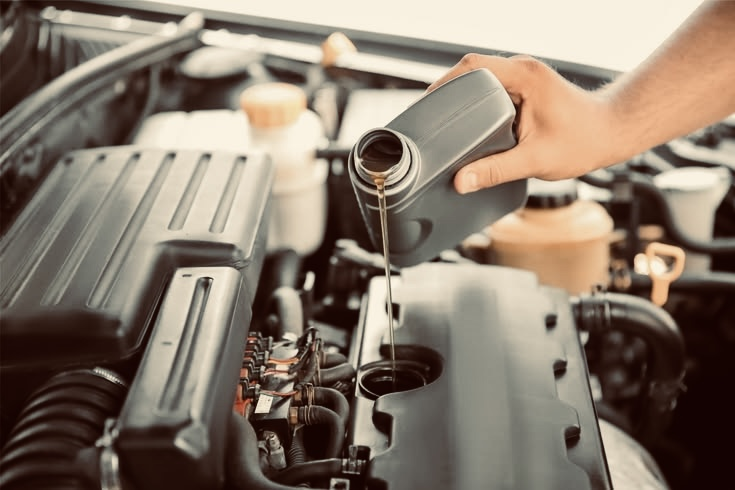
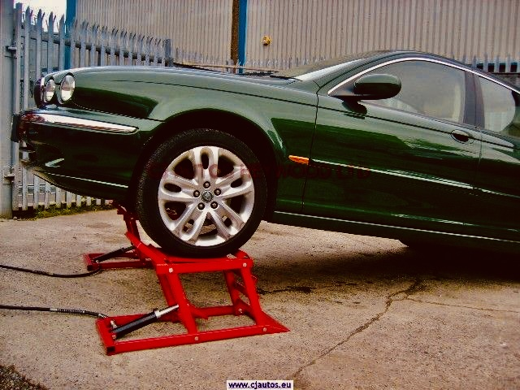
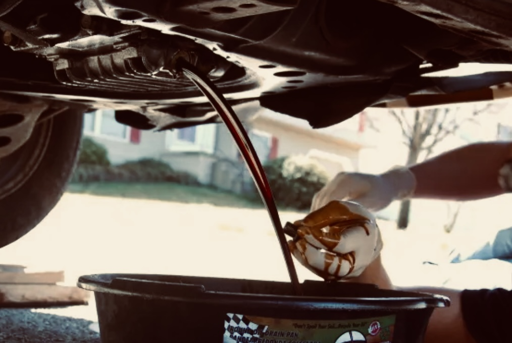

Step by step guide on : How To Change Your Car Oil In 5 Steps

1. Lift The Vehicle

In order to access the plug and empty the old oil, you will have to raise your vehicle.
You have two options for getting your automobile off the ground: a ramp or a car jack and jack supports.
Have a guide with you while operating a ramp so you don't miss the ramps and get them beneath your car. For increased safety, position wooden blocks behind the back wheels after the car is on the ramps.
You'll need to set up jack stands to support the automobile if you're using a car jack. Never work underneath a car that is supported solely by a jack for your own safety. There are far too many accounts of people suffering injuries as a result of the jack giving out.
2. Locate Your Oil Pan And Drain The Old Oil

Find the oil pan after your automobile is off the ground.
Typically, the oil pan is large and dips close to the engine's location in relation to the car's floor. You must remove the undertray with your basic hand tools in order to reach the oil pan. Bolts, screws, or plastic clips are used to secure the majority of undertrays. Although plastic undertrays are installed in more recent cars to increase aerodynamics, they may still be removed with simple tools.
A plug that keeps the oil in the pan should be visible once the undertray has been removed.
Using the appropriate wrench, spin the drain plug counterclockwise to remove it after placing your oil capture container below it. As you pull it away from the pan, the oil will begin to run out, so hold onto the drain plug.
Allow the engine to drain for a few minutes, or until the oil flow has reduced to a trickle. Replace the undertray and plug after it has completed draining.
3. Replace The Oil Filter
It's time to find and change your engine filter after draining your oil pan.
Go to the hood of your automobile and open it. Your filter is located next to your car's engine; if you can't find it, see your owner's manual. You can use your hands to unscrew some oil filters, but if you're having trouble, you can use a wrench.
To prevent needless spills, place your oil catch pan beneath the filter to collect any leftover oil. The rubber gasket on top of your new oil filter should then be lightly coated with oil to help produce a suitable seal as you tighten the filter.
Don't forget to check that the old seal hasn't become lodged in the oil filter housing! Your oil filter cannot be double sealed since all of the oil will leak out.